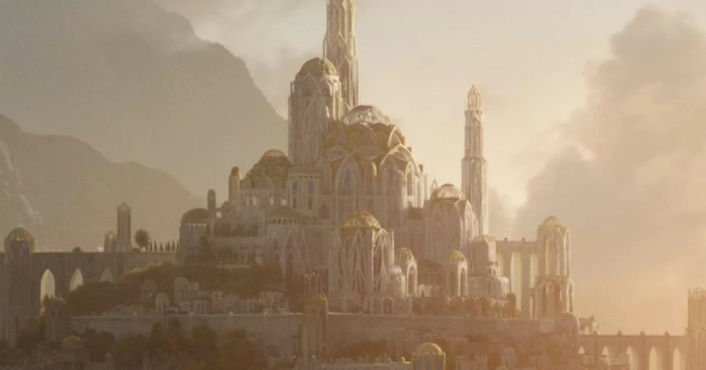

About Lindon
Lindon is located in the northwest part of Middle-earth near the Blue Mountains and serves as the bridge between Middle-earth and Valinor, the "Blessed Realms" where certain elves are permitted to live. The land is spilt into two separate land masses with the Gulf of Lune in between. The southern land is called Harlindon and the northern is Forlindon, both of which make up Lindon. The Gulf of Lune holds the port Grey Havens. Lindon quickly became a stronghold for the elves once they settled on Middle-earth because of its location and port which makes it the perfect place to send ships to Valinor.

Geography
Lindon was a name of Ossiriand, a region west of the Blue Mountains, in East Beleriand. After the deluge of Beleriand in the War of Wrath, Lindon became the westernmost land of the continent of Middle-earth. The regions of Forlindon and Harlindon were the chief parts of Lindon, which extended north of the Gulf of Lune to include the lands east of the Blue Mountains, and west of the River Lune as far as the inflow of the Little Lune.South of the Lune it had no clear bounds, but the Tower Hills (as they were later called) were maintained as an outpost. When Ar-Pharazôn captured Sauron and took him to Númenor, the Westlands found peace, and Gil-galad was free to extend his power and influence so that the Elves of Lindon controlled most of the Westlands, even to the borders of Greenwood the Great, until the Downfall of Númenor, when Sauron returned to Middle-earth. In the tumult following the Downfall of Númenor, Lindon suffered great loss as "the sea rode in upon the land", and it shrank by the end of the Second Age.

Second age
In S.A. 1, the Elves built the Grey Havens in the newly-formed Gulf of Lhûn where the Eldar sailed the Straight Road, but most of them were unwilling at first to forsake the lands they fought in and preferred to linger there. This was the foundation of Lindon. Gil-galad was the last heir of the kings of the Noldor in exile, and acknowledged as High King of the Elves of the West, so he was the king in Lindon. In the beginning of the Second Age, most of the Noldor that remained in Middle-earth dwelt in Lindon, but many Teleri, survivors of Doriath and Ossiriand, left Lindon before S.A. 1000 to establish realms among the Silvan Elves. Galadriel and Celeborn brought many Noldor, Sindar, and Green-elves out of Lindon into Eriador to dwell there for some time.Many of the Noldor in Lindon led by Celebrimbor established the realm of Eregion in S.A. 750 near the West-gate of Khazad-Dûm due to the recent discovery of mithril in Khazad-Dûm. In S.A. 600, Entulessë, a ship from Númenor, arrived in Mithlond where Gil-galad welcomed the Númenóreans, before reestablishing contact with their Mannish kin, the Middle Men. A fair being calling himself Annatar, an emissary of the Valar, came seeking entrance. Gil-galad and Master Elrond sensed that he was not what he seemed, and denied him. Messengers were sent from Lindon with warnings, but they were unheeded, and Annatar was received gladly, mostly in Eregion. However, Gil-galad and Elrond were proven correct, as Annatar was indeed Sauron and later, there was war in Eriador. Elrond led the forces of Lindon to battle to defend Eregion. With them, and other Elves who fled the destruction of Eregion, he established Imladris in S.A. 1697. The Elves called that time Days of Flight as many fled to Lindon and thence over the Sea to the Uttermost West. But in Lindon Gil-galad still maintained his power, and Sauron dared not as yet to pass the Ered Luin nor to assail the Havens; and Gil-galad was aided by the Númenóreans. In the Dark Years, Sauron had conquered most of the Westlands, but in S.A. 1700 Tar-Minastir sent a fleet to Lindon and the combined army of Lindon and Númenor drove Sauron's forces out of Eriador.

Mallorn
Mellyrn were similar to beech trees in that their bark was smooth and silver-grey, but their leaves, which were green above and silver beneath, were much larger and longer than those of beech trees and turned a clear gold in autumn. The golden leaves did not fall like those of other deciduous trees; they remained on the tree throughout the winter. They fell only in the spring, when golden flowers bloomed on the branches and new leaves sprouted, turning the entire forest a bright gold. Mallorn trees were more alive and had a greater presence than other trees.